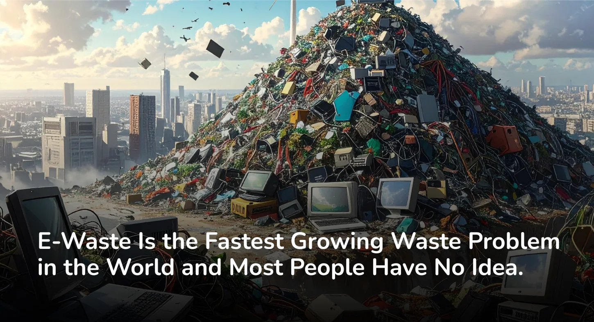

Every year, the world generates over 50 million metric tonnes of electronic waste. To put that in perspective, that is heavier than all the commercial aircraft ever built, combined. And less than 20 percent of it is recycled responsibly.
The rest? It ends up in landfills, informal dumpsites, or just sitting in drawers and storage rooms waiting for someone to figure out what to do with it.
The answer is straightforward. Technology moves fast and product lifespans are getting shorter. A phone that was cutting edge two years ago feels outdated today. Laptops, tablets, televisions, kitchen appliances with digital components, wearables, all of it gets replaced at a pace the world's waste infrastructure was never built to handle.
And because electronics do not look like traditional waste, people do not treat them like waste. They sit in cupboards. They pile up in office storage rooms. They get donated to people who cannot use them and eventually end up in the same place anyway.
Electronics are built from a remarkably complex mix of materials. A single smartphone contains over 60 different elements from the periodic table. Some of these, like gold, silver, and copper, are valuable and recoverable. Others, like lead, cadmium, beryllium, and brominated flame retardants, are hazardous and need careful handling.
When these materials are not managed properly, they do not stay contained. They move through soil, water, and air. They accumulate in ecosystems. They enter the food chain in ways that are slow, invisible, and deeply damaging.
Here is something worth sitting with. The materials inside discarded electronics are finite. Mining for new raw materials is expensive, energy intensive, and environmentally destructive. Responsible e-waste recycling recovers those materials and puts them back into the supply chain, reducing the need to extract more from the earth.
Every tonne of e-waste processed responsibly is a tonne of raw material that does not need to be mined. That is not a small thing.
e2e exists because this problem needs structured, accountable solutions. Not awareness alone, but actual systems that make responsible disposal accessible to individuals, businesses, and institutions. Certified collection. Documented processing. Verified data destruction. End to end accountability, which is exactly what the name stands for.
The scale of the problem is large. But the entry point is simple. It starts with one device, handled the right way, by the right people.